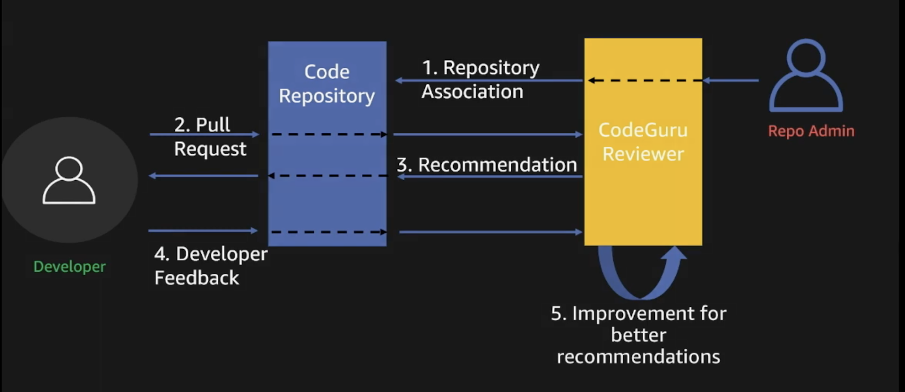
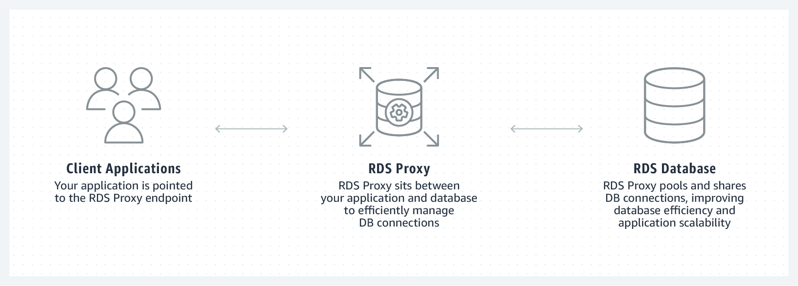

Recap AWS re:Invent 2019
AWS re:Invent는 매년하는 행사라는게 믿기지 않을 정도로 굵직한 신기술들이 쏟아집니다.
세션들 둘러보며 관심있는 주제의 영상과 블로그를 찾아보고 맛보기 한 결과를 정리하는 글 입니다.
어떤 기능들이 새로 추가됐는지 전달 할 수 있으면 좋겠습니다.
Amazon CodeGuru
Amazon CodeGuru는 크게 2가지를 제공합니다.
- Repository와 연동하여 Pull Request의 수정사항을 검토 후 피드백을 제공하는 Reviewer
- SDK와 Snippet을 코드에 추가하면 어플리케이션의 성능을 분석해주는 Profiler
AI의 가르침에 목말랐던 저는 이 중 Reviewer에 관심이 갔습니다.
공식 문서를 읽어보면 CodeGuru는 Open Source 프로젝트와 Amazon 프로젝트의 코드를 통해 학습시켰다고 합니다. 학습의 결과로 아래와 같은 결함을 찾고 피드백을 제공 할 수 있다고 합니다.
- Resource Leak을 찾을 수 있다.
- Race condition이 발생 할 수 있는 상황을 찾을 수 있다.
- 비효율적으로 작성된 코드를 찾아 낼 수 있다.
- AWS SDK / API를 사용하는 코드에 대해 Best Practice를 따르는지 확인 할 수 있다.
인간의 리뷰가 네이밍, 비즈니스 로직과 요구사항의 일치 여부 그리고 중복된 코드 등에 초점이 맞춰지는 것과 대비되는 부분입니다.
선행 학습은 여기까지 하고, 실제로 AI의 가르침을 받아봅시다.
AI의 가르침을 받기 위해서는 CodeGuru Console에서 저장소(Repository)를 연동 후 연동된 저장소에서 Pull Request를 생성하면 자동으로 CodeGuru의 Comments가 추가됩니다. (실제로 상당히 간단합니다)
Pull Request 생성 후 Comments가 추가되기 까지 5~10분 정도 소요됩니다. 국가번호까지 82를 쓰는 나라에서 결코 짧은 대기 시간이라고 생각되지는 않습니다.
아래 이미지가 CodeGuru 연동부터 피드백을 받기까지의 과정을 잘 설명해줍니다.

실제로 어떤 피드백을 제공하는지 궁금해서 Pull Request를 10개 정도 생성해봤는데, 그닥 의미있는 피드백을 제공 받지는 못했습니다. 아래 2개가 그나마 유익한 피드백이었습니다.
- FileStream을 명시적으로 Close하지 않음
- 인자로 전달되는 문자열이 특정 Character를 포함하지 않으면 IndexOutofBoundsException 발생 가능
아직은 좀 미흡하다는 생각이 많이 들었습니다. 지원하는 언어도 늘고 서울 리전도 지원하는 봄날에 써보는 것을 추천합니다.
현시점(2020/02)에 사용했을 때 느낀 유일한 장점은 ‘설정이 쉬움’이었습니다.
<장점>
- 설정이 쉬움
<단점>
- 언어와 지역의 제한이 심함. 언어는 Java만 지원하고, Region은 4곳만 지원한다.
- $0.75/100 lines의 가격에 합당한 피드백을 제공하지 않음
<References>
- Session: https://www.youtube.com/watch?v=WYuo0bIZre0&t=2943s
- Service Page: https://aws.amazon.com/codeguru/
- Blog: https://aws.amazon.com/about-aws/whats-new/2019/12/aws-announces-amazon-codeguru-for-automated-code-reviews-and-application-performance-recommendations/
RDS Data API for Aurora Serverless
RDS Data API는 클라이언트 어플리케이션에서 Aurora Serverless Cluster에 Persistent한 연결을 유지하는 대신, HTTPS Endpoint로 SQL Statements 처리를 요청하고 처리 결과를 JSON 형태로 수신 할 수 있는 기능을 제공합니다.
또한 DB ID / Password 대신, AWS Secret Manager에 저장된 Credentials로 인증 할 수 있는 기능을 제공합니다.
RDS Data API를 이용하기 위해서는 필요한 설정이 있습니다. IAM 권한 추가, AWS Secret Manager Credential 생성, Data API를 위한 VPC Endpoint 생성
필요한 설정이 끝났으면, Data API로 Aurora Serverless Cluster에 SQL Statements 처리를 요청 할 수 있습니다. 아래는 요청에 사용되는 CLI와 Python Snippet 입니다.
aws rds-data execute-statement --secret-arn "{secrets-arn}" |
import boto3 |
<장점>
- HTTPS Endpoint(코드상으로는 Cluster의 arn)로 SQL Statement 처리를 요청 할 수 있어서 VPC 구성에서 자유롭다.
- RDS Data API에서 Connection을 관리하기 때문에, 클라이언트 어플리케이션에서 Persistent한 연결을 관리 할 필요가 없다.
- AWS Secret Manager를 통해 인증 할 수 있다.
RDS Proxy
RDS Proxy라는 이름이 암시하듯, 클라이언트 어플리케이션과 RDS 사이에서 RDS로의 요청을 대신 처리하는 이 서비스는 Database Connection의 효과적 관리를 주 목적으로 합니다. 클라이언트 어플리케이션에서 Connection Pool이라고 부르는 기능을 대신 수행하고, 이를 공유 가능한 형태로 제공합니다.

대부분의 어플리케이션에서 Connection Pool을 구현하여 Connection을 재활용한 이유는 Connection을 생성하는 작업이 데이터베이스의 CPU와 메모리를 소모하는 작업이기 때문입니다. 그런데 최근 Lambda로 대표되는 Serverless 구성은 Connection Pool을 효과적으로 구현하기 어려워 Connection의 생성과 파기 빈도가 높습니다. 그리고 Connection의 잦은 생성과 파기는 데이터베이스의 메모리와 CPU를 갉아 먹었습니다. 이러한 배경에서 RDS Proxy가 나왔고, 구체적인 장점은 아래와 같습니다.
<장점>
- Lambda와 같은 리소스에서도 Connection 재활용이 쉬워졌다. 또한 어플리케이션간 Connection 공유가 가능하여 최소한의 Connection으로 복수의 어플리케이션의 요청을 처리 할 수 있다.
- RDS Failover가 발생시, RDS Proxy가 새로운 RDS Instance로 요청을 보내기 때문에 Failover time이 줄어들고 별도의 DNS 변경이 필요하지 않다.
<단점>
- 이미 RDS는 가장 비싼 Resource 중 하난데, RDS Proxy를 사용하기 위해서는 $0.015/vCPU-hour(월에 약 $10) 비용을 추가로 지불해야 합니다.
Lambda Provisioned Concurrency
Lambda Cold Start로 인해 안정적인 Latency를 보장하기 어려웠던 분들의 고민을 한번에 해결 할 수 있는 기능이 추가됐습니다.
물론 고민 해결에는 비용($$$)이 발생하고 비용은 또 그 나름의 고민이 될 수 있으니 신중한 판단을 요하는 바입니다.
Lambda Provisioned Concurrency는 Lambda 함수가 수십ms 이내에 실행되는 것을 보장한다. (아름다운 속도입니다)
민감한 부분이니 공식 문서의 표현으로 대신합니다.
Provisioned Concurrency, a feature that keeps functions initialized and hyper-ready to respond in double-digit milliseconds.
다시 읽어도 hyper-ready라는 표현은 인상적입니다. hyper-ready라는 표현의 함의는 Lambda 함수에 설정된 Provisioned Concurrency 만큼 실행 환경(Execution environment)를 미리 생성해서 요청을 바로 처리 할 수 있다는 의미입니다.
여기까지 읽고나면, 좋은데? 라는 순진한 생각과 그래서 얼만데? 라는 자본주의적인 질문이 동시에 나옵니다. AWS는 Lambda 소개서에 예시와 함께 예상 비용을 안내하고 있습니다.
일반 Lambda 함수의 비용이 Compute Charge와 Request Charge로 구성됐다면, Provisioned Concurrency는 여기에 Provisioned Concurrency 비용이 추가됩니다. 대신 Compute charge 비용이 내려갑니다.
- Lambda Price: Compute Charge($0.0000166667/GB-s) + Request Charge($0.20/1M)
- Provisioned Concurrency Lambda Price: Provisioned Concurrency($0.0000041667/GB-s) + Compute Charge($0.0000097222/GB-s) + Request Charge($0.20/1M)
256MB의 메모리가 설정된 람다 함수에 Provisioned Concurrency를 20을 설정하고 한달을 운영했다고 가정하면,
- Total period time = 2,678,400 seconds = 31 * 24 * 3600 seconds
- Total memory amount = 5GB = 20 * 256MB/1024MB
- Total Provisioned Concurrency = 5 GB * 2,678,400 seconds = 13,392,000 GB-s
- Monthly Provisioned Concurrency charges = $55 = 13,392,000 GB-s * $0.000004167
Compute Charge와 Request Charge를 제외한 비용이 약 $55 정도 소요됩니다.
REST API를 Lambda로 구성 할 때 API 별로 함수 하나가 대응하는 경우가 일반적인데, 그런 상황을 감안하면 Mission Critical 한 상황에서나 고려해볼 만한 가격입니다. (비싸다는 소리입니다)
우선, Serverless 환경에서 $$$로 Latency를 살 수 있다. 알고는 있자. 쓸 날이 온다.
<References>
- Session: https://www.youtube.com/watch?v=EML6FKBdsNU
- Pricing: https://aws.amazon.com/lambda/pricing/
- Blog: https://aws.amazon.com/blogs/aws/new-provisioned-concurrency-for-lambda-functions/
AWS Compute Optimizer
기존의 AWS Cost Explorer의 Recommendations은 CPU Utilization을 참고하여 동일 Instance Family 내에서의 추천으로 제한됐습니다. 새로 추가된 AWS Compute Optimizer는 CPU Utilization과 Memory Usage, Network & Disk I/O 등을 종합적으로 고려하여 Instance Type을 추천해줍니다.
CloudWatch 모니터링 로그를 참고하여 Instance type을 추천하기 때문에, CloudWatch 모니터링 비용이 별도로 추가되고 필요한 로그가 활성화되어 있어야 합니다.
또한 특정 시간대나 요일에 트래픽이 몰리는 서비스가 많기 때문에 Compute Optimizer 활성화 후 일주일 후에 추천 받을 것을 권장합니다.
Compute Optimizer의 가장 큰 장점은 무료라는 점입니다. 추가되는 비용은 CloudWatch 모니터링 비용 정도입니다.
AWS Compute Optimizer is now available at sixteen AWS regions at no additional charge. You only pay for the CloudWatch monitoring fees.
<References>
Kinesis Video Stream support WebRTC
Live Media Stream 또는 기기간 영상/음성 교환 기능을 쉽게 구축 할 수 있도록 도와 줍니다. Kinesis Video Streams은 WebRTC와 관련된 기능을 온전히 제공하기 때문에 Signaling, Relay server 등을 구축/운용 할 필요가 없습니다.
Kinesis Video Streams의 Codelab은 README만 따라하면 30분 내로 기기간 영상 통화 기능을 실행 해볼 수 있도록 잘 작성되어있습니다. (설명을 따라 하는 것 만으로 뭔가가 제대로 완성되는 경험은 레고 이후 오랜만입니다.)
Codelab을 따라 하고나면 WebRTC와 관련된 기능을 온전히 제공한다는 의미가 체감이 됩니다. Kinesis Video Streams은 Peer-to-peer Media Streaming 기능을 기획하고 있다면 확실히 좋은 선택지다.
<References>